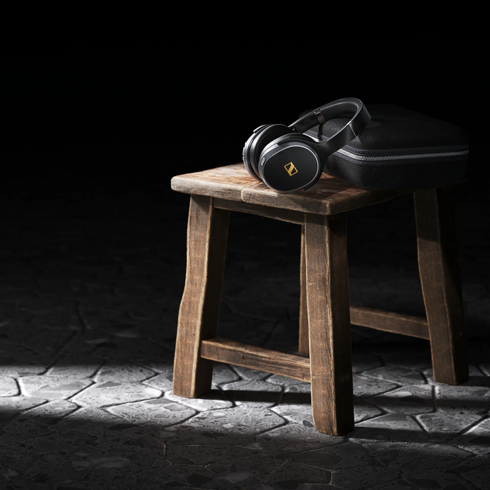
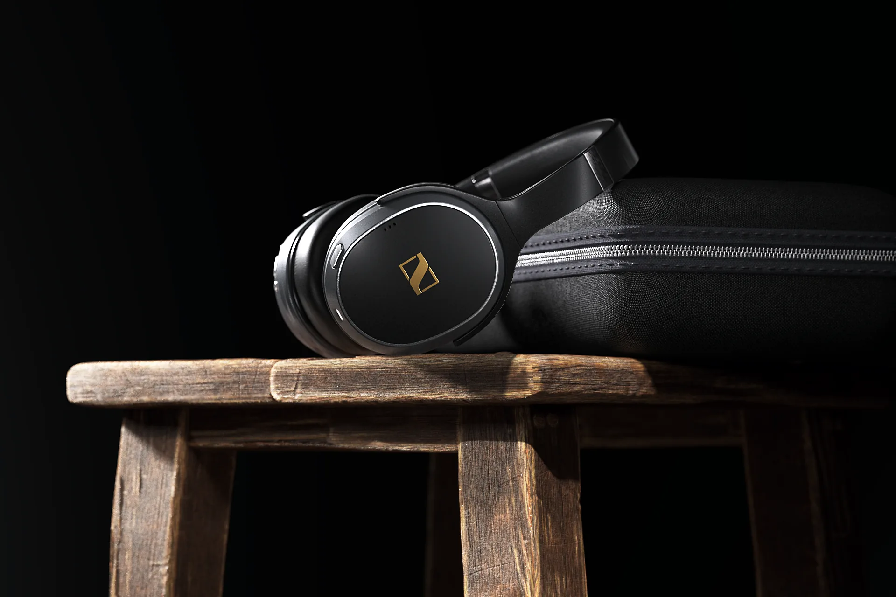
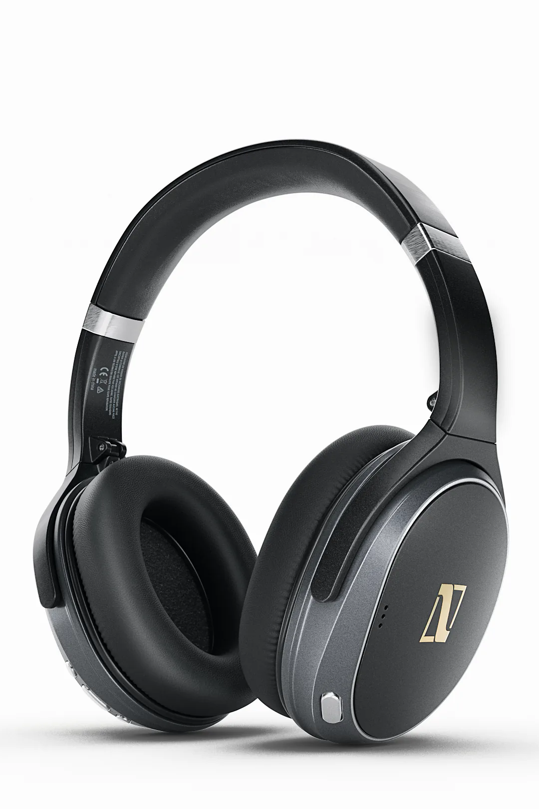
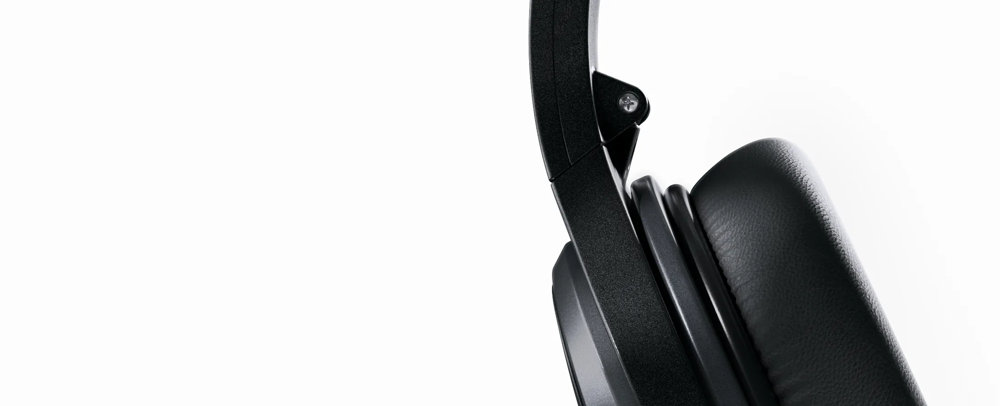

PROJECT 003 / MATERIAL & LIGHT
头戴耳机
Headphones · Product Visual
材质细节 / 精准布光 / 产品构图
以深色皮革、金属饰面与温润木纹的质感对照，借由克制的高光和轮廓光，让产品结构在暗部中清晰呈现。

氛围与空间
ENVIRONMENT / 02—03

形态与结构
PRODUCT / 04—05

FORM & MATERIAL
让不同的表面回应同一道光，以细节、构图与明暗塑造产品的视觉性格。